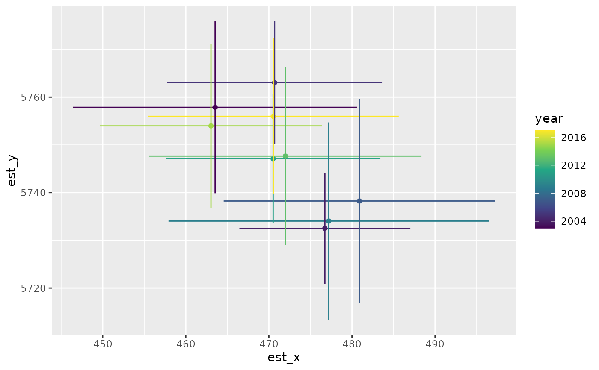

Extract a relative biomass/abundance index, center of gravity, effective area occupied, or weighted average
Source:R/index.R
get_index.RdExtract a relative biomass/abundance index, center of gravity, effective area occupied, or weighted average
Usage
get_index(obj, bias_correct = TRUE, level = 0.95, area = 1, silent = TRUE, ...)
get_index_split(
obj,
newdata,
bias_correct = FALSE,
nsplit = 1,
level = 0.95,
area = 1,
silent = FALSE,
predict_args = list(),
...
)
get_cog(
obj,
bias_correct = FALSE,
level = 0.95,
format = c("long", "wide"),
area = 1,
silent = TRUE,
...
)
get_weighted_average(
obj,
vector,
bias_correct = FALSE,
level = 0.95,
area = 1,
silent = TRUE,
...
)
get_eao(obj, bias_correct = FALSE, level = 0.95, area = 1, silent = TRUE, ...)Arguments
- obj
Output from
predict.sdmTMB()withreturn_tmb_object = TRUE(the usual case). Alternatively, ifsdmTMB()was called withdo_index = TRUE, or if usingget_index_split(), an object fromsdmTMB().- bias_correct
Should bias correction be implemented via
TMB::sdreport()? Bias correction accounts for the non-linear transformation of random effects when calculating the index. Recommended to beTRUEfor final analyses, but can be set toFALSEfor faster calculation while experimenting with models. See Thorson and Kristensen (2016) in the References.- level
The confidence level.
- area
Grid cell area for area weighting the index. Can be: (1) a numeric vector of length
nrow(newdata)with area for each grid cell, (2) a single numeric value to apply to all grid cells, or (3) a character value giving the column name innewdatacontaining areas.- silent
Silent?
- ...
Passed to
TMB::sdreport().- newdata
New data (e.g., a prediction grid by year) to pass to
predict.sdmTMB()in the case ofget_index_split().- nsplit
The number of splits to do the calculation in. For memory intensive operations (large grids and/or models), it can be helpful to do the prediction, area integration, and bias correction on subsets of time slices (e.g., years) instead of all at once. If
nsplit > 1, this will usually be slower but with reduced memory use.- predict_args
A list of arguments to pass to
predict.sdmTMB()in the case ofget_index_split().- format
Long or wide.
- vector
A numeric vector of the same length as the prediction data, containing the values to be averaged (e.g., depth, temperature).
Value
For get_index():
A data frame with columns for time, estimate (area-weighted total abundance
or biomass), lower and upper confidence intervals, log estimate, and standard
error of the log estimate.
For get_cog():
A data frame with columns for time, estimate (center of gravity: the
abundance-weighted mean x and y coordinates), lower and upper confidence
intervals, and standard error of center of gravity coordinates.
For get_eao():
A data frame with columns for time, estimate (effective area occupied: the
area required if the population was spread evenly at the arithmetic mean
density), lower and upper confidence intervals, log EAO, and standard error
of the log EAO estimates.
For get_weighted_average():
A data frame with columns for time, estimate (weighted average of the
provided vector, weighted by predicted density), lower and upper confidence
intervals, and standard error of the estimates.
References
Geostatistical model-based indices of abundance (along with many newer papers):
Shelton, A.O., Thorson, J.T., Ward, E.J., and Feist, B.E. 2014. Spatial semiparametric models improve estimates of species abundance and distribution. Canadian Journal of Fisheries and Aquatic Sciences 71(11): 1655–1666. doi:10.1139/cjfas-2013-0508
Thorson, J.T., Shelton, A.O., Ward, E.J., and Skaug, H.J. 2015. Geostatistical delta-generalized linear mixed models improve precision for estimated abundance indices for West Coast groundfishes. ICES J. Mar. Sci. 72(5): 1297–1310. doi:10.1093/icesjms/fsu243
Geostatistical model-based centre of gravity:
Thorson, J.T., Pinsky, M.L., and Ward, E.J. 2016. Model-based inference for estimating shifts in species distribution, area occupied and centre of gravity. Methods Ecol Evol 7(8): 990–1002. doi:10.1111/2041-210X.12567
Geostatistical model-based effective area occupied:
Thorson, J.T., Rindorf, A., Gao, J., Hanselman, D.H., and Winker, H. 2016. Density-dependent changes in effective area occupied for sea-bottom-associated marine fishes. Proceedings of the Royal Society B: Biological Sciences 283(1840): 20161853. doi:10.1098/rspb.2016.1853
Bias correction:
Thorson, J.T., and Kristensen, K. 2016. Implementing a generic method for bias correction in statistical models using random effects, with spatial and population dynamics examples. Fisheries Research 175: 66–74. doi:10.1016/j.fishres.2015.11.016
Examples
# \donttest{
library(ggplot2)
# use a small number of knots for this example to make it fast:
mesh <- make_mesh(pcod, c("X", "Y"), n_knots = 60)
# fit a spatiotemporal model:
m <- sdmTMB(
data = pcod,
formula = density ~ 0 + as.factor(year),
time = "year", mesh = mesh, family = tweedie(link = "log")
)
# prepare a prediction grid:
nd <- replicate_df(qcs_grid, "year", unique(pcod$year))
# Note `return_tmb_object = TRUE` and the prediction grid:
predictions <- predict(m, newdata = nd, return_tmb_object = TRUE)
# biomass index:
ind <- get_index(predictions, bias_correct = TRUE)
ind
#> year est lwr upr log_est se se_natural type
#> 1 2003 277556.6 198537.77 388025.4 12.53378 0.1709448 213396.64 index
#> 2 2004 399682.6 311373.58 513036.9 12.89843 0.1273887 328514.13 index
#> 3 2005 430225.5 327502.38 565168.4 12.97206 0.1391935 349502.73 index
#> 4 2007 119509.7 86514.07 165089.6 11.69115 0.1648452 92900.11 index
#> 5 2009 210258.6 151807.71 291215.1 12.25609 0.1661887 161751.50 index
#> 6 2011 339420.7 262199.67 439384.3 12.73500 0.1317035 276264.20 index
#> 7 2013 351455.2 258755.05 477365.7 12.76984 0.1562276 276664.42 index
#> 8 2015 383241.4 285819.07 513870.4 12.85642 0.1496487 306744.07 index
#> 9 2017 192367.9 136764.93 270576.6 12.16716 0.1740572 148187.40 index
ggplot(ind, aes(year, est)) + geom_line() +
geom_ribbon(aes(ymin = lwr, ymax = upr), alpha = 0.4) +
ylim(0, NA)
# do that in 2 chunks
# only necessary for very large grids to save memory
# will be slower but save memory
# note the first argument is the model fit object:
ind <- get_index_split(m, newdata = nd, nsplit = 2, bias_correct = TRUE)
#> Calculating index in 2 chunks ■■■■■■■■■■■■■■■■ 50% | ETA: 0s
#> Calculating index in 2 chunks ■■■■■■■■■■■■■■■■■■■■■■■■■■■■■■■ 100% | ETA: 0s
# center of gravity:
cog <- get_cog(predictions, format = "wide")
#> Bias correction is turned off.
#> It is recommended to turn this on for final inference.
cog
#> year est_x lwr_x upr_x se_x est_y lwr_y upr_y se_y
#> 1 2003 463.5260 446.4142 480.6378 8.730670 5757.861 5739.855 5775.867 9.187109
#> 2 2004 476.7402 466.4506 487.0297 5.249871 5732.504 5720.879 5744.129 5.931164
#> 3 2005 470.6887 457.7494 483.6280 6.601796 5763.031 5750.153 5775.910 6.570990
#> 4 2007 480.8948 464.5560 497.2336 8.336280 5738.231 5716.843 5759.620 10.912733
#> 5 2009 477.2029 457.9185 496.4872 9.839144 5734.029 5713.361 5754.697 10.545101
#> 6 2011 470.5112 457.6004 483.4221 6.587284 5747.104 5733.628 5760.579 6.875389
#> 7 2013 471.9877 455.6078 488.3676 8.357252 5747.645 5728.969 5766.320 9.528488
#> 8 2015 463.0289 449.6443 476.4136 6.829028 5753.970 5736.844 5771.096 8.737855
#> 9 2017 470.5219 455.4189 485.6249 7.705734 5755.973 5739.644 5772.301 8.331045
#> type
#> 1 cog
#> 2 cog
#> 3 cog
#> 4 cog
#> 5 cog
#> 6 cog
#> 7 cog
#> 8 cog
#> 9 cog
ggplot(cog, aes(est_x, est_y, colour = year)) +
geom_point() +
geom_linerange(aes(xmin = lwr_x, xmax = upr_x)) +
geom_linerange(aes(ymin = lwr_y, ymax = upr_y)) +
scale_colour_viridis_c()

# effective area occupied:
eao <- get_eao(predictions)
eao
#> year est lwr upr log_est se type
#> 1 2003 2408.074 1407.0230 4121.340 7.786583 0.2741638 eoa
#> 2 2004 1807.151 849.4148 3844.759 7.499507 0.3851904 eoa
#> 3 2005 1660.807 943.6930 2922.859 7.415059 0.2884024 eoa
#> 4 2007 1854.122 793.7681 4330.947 7.525166 0.4328524 eoa
#> 5 2009 3227.459 2437.0094 4274.293 8.079450 0.1433310 eoa
#> 6 2011 3056.811 2192.3985 4262.042 8.025128 0.1695827 eoa
#> 7 2013 2887.839 1895.2602 4400.246 7.968264 0.2148775 eoa
#> 8 2015 1739.803 801.6399 3775.904 7.461527 0.3953480 eoa
#> 9 2017 1975.478 703.8844 5544.253 7.588566 0.5265156 eoa
ggplot(eao, aes(year, est)) + geom_line() +
geom_ribbon(aes(ymin = lwr, ymax = upr), alpha = 0.4) +
ylim(0, NA)
# weighted average (e.g., depth-weighted by biomass):
wa <- get_weighted_average(predictions, vector = nd$depth)
#> Bias correction is turned off.
#> It is recommended to turn this on for final inference.
wa
#> year est lwr upr se type
#> 1 2003 143.0966 131.6188 154.5745 5.856165 weighted_average
#> 2 2004 167.9096 153.5499 182.2693 7.326531 weighted_average
#> 3 2005 149.2031 139.8667 158.5395 4.763568 weighted_average
#> 4 2007 130.2034 116.7758 143.6311 6.850989 weighted_average
#> 5 2009 139.5020 127.7901 151.2139 5.975573 weighted_average
#> 6 2011 155.3026 144.6900 165.9151 5.414662 weighted_average
#> 7 2013 148.8824 137.4326 160.3322 5.841828 weighted_average
#> 8 2015 150.9538 139.2211 162.6866 5.986200 weighted_average
#> 9 2017 150.7800 140.0110 161.5491 5.494516 weighted_average
ggplot(wa, aes(year, est)) + geom_line() +
geom_ribbon(aes(ymin = lwr, ymax = upr), alpha = 0.4)
# }